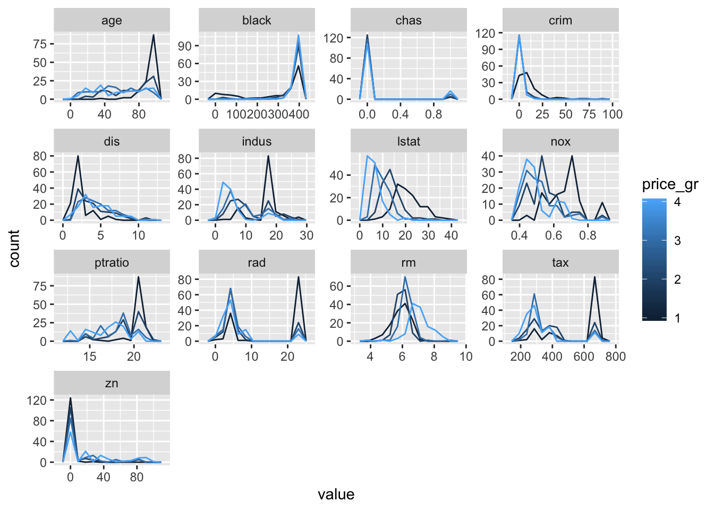
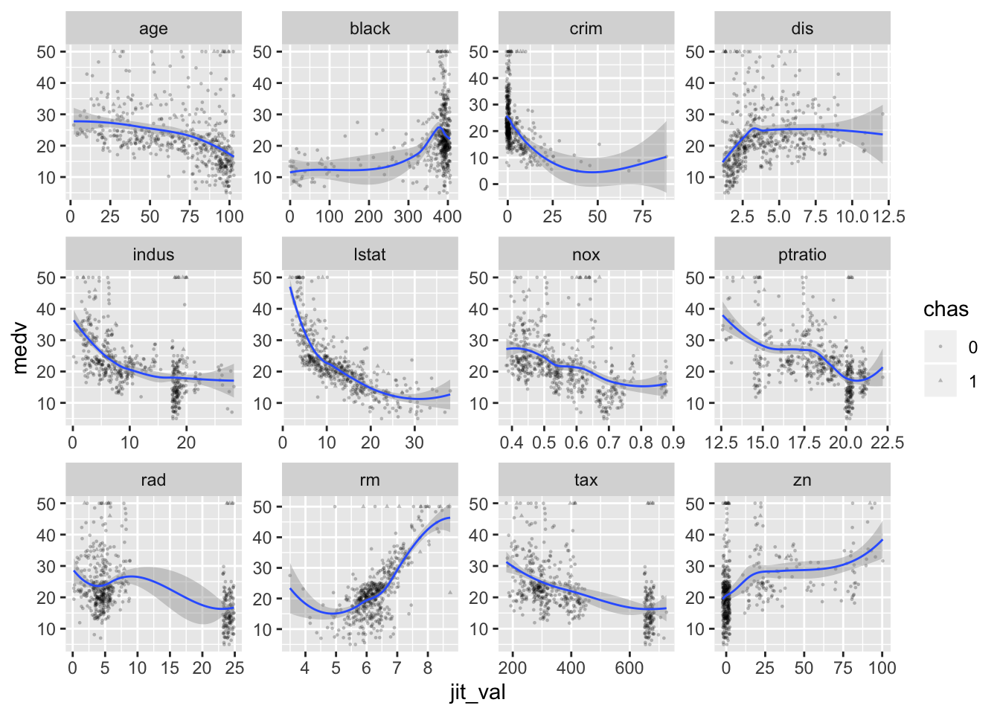
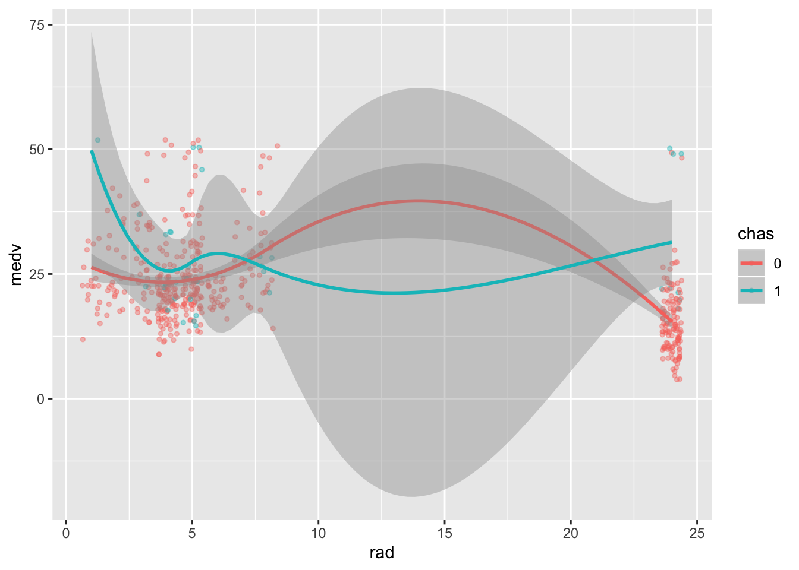

Chapter 1 tibbles, ggplot2, and the tidyverse
The tidyverse universe includes:
## ── Attaching packages ──────────────────────────────────── tidyverse 1.2.1 ──## ✔ ggplot2 3.2.0 ✔ purrr 0.3.2
## ✔ tibble 2.1.3 ✔ dplyr 0.8.1
## ✔ tidyr 0.8.3 ✔ stringr 1.4.0
## ✔ readr 1.3.1 ✔ forcats 0.4.0## ── Conflicts ─────────────────────────────────────── tidyverse_conflicts() ──
## ✖ dplyr::filter() masks stats::filter()
## ✖ dplyr::lag() masks stats::lag()In general, the tidyverse is the following:
- provided the
pipecommand%>%
x %>% f(y, z, ...)isf(x, y, z, ...)- allows chained commands for better coherence
- e.g.,
mtcars %>% apply(2, mean)is error withouttidyr::%>%
tibbleis the improved data structure of the tidyverse
- easier to read-in data to a useful format
- automatic type conversion
- nicer printing options
dplyrprovides tibble manipulation commands
- understandable data processing with
pipestreams - filter data faster
- arrange rows of data easily
- select columns quickly
- mutate variables
- summarize according to
group_by() - also provides SQL relational operations
ggplot2is a plotting syntax (grammar of graphics)
qplot()provides a sensible quick plot- apply plot types to data rather than the reverse
- e.g.
ggplot(data) + plot_type(aes(xvar, yvar, groups), options) - allows grid of plots by group using facets
- overlays statistical summaries, e.g.
+ geom_smooth(x, y) - “add” options such as transformed axes, labels, coordinates, etc.
readris a faster, less painful read-in method
read_fundenotesreadrfunctions (instead ofread.fun)- guesses column types
- offers writing functions, too
- allows read and write with RDS, R’s binary format
tidyrrecharacterizes tibbles
spread()turns key and value columns into key-category columns- e.g.,
state, year, popintostate, 1990, 1991, ...of pop values gather()turns expands data frames by condensing columns- e.g., condenses
1990, 1991, ...into twoyear, popcolumns
- Other helpful tidyverse packages:
stringroffers many usefulstr_funoperationsforcatshas operations _for cat_egorical variableslubridateprovides date and time controlpurrr
The examples I’ll use in the next few chapters are the Boston housing database and the Lahman baseball database. By doing analysis on these two data sets, I hope to introduce the power of the tidyverse.
1.1 Tibbles: Boston housing data
Load, convert, print a tibble.
# Convert to a tibble so it prints nicely
library(MASS)##
## Attaching package: 'MASS'## The following object is masked from 'package:dplyr':
##
## selectselect <- dplyr::select
boston <- as_tibble(MASS::Boston)
boston## # A tibble: 506 x 14
## crim zn indus chas nox rm age dis rad tax ptratio
## <dbl> <dbl> <dbl> <int> <dbl> <dbl> <dbl> <dbl> <int> <dbl> <dbl>
## 1 0.00632 18 2.31 0 0.538 6.58 65.2 4.09 1 296 15.3
## 2 0.0273 0 7.07 0 0.469 6.42 78.9 4.97 2 242 17.8
## 3 0.0273 0 7.07 0 0.469 7.18 61.1 4.97 2 242 17.8
## 4 0.0324 0 2.18 0 0.458 7.00 45.8 6.06 3 222 18.7
## 5 0.0690 0 2.18 0 0.458 7.15 54.2 6.06 3 222 18.7
## 6 0.0298 0 2.18 0 0.458 6.43 58.7 6.06 3 222 18.7
## 7 0.0883 12.5 7.87 0 0.524 6.01 66.6 5.56 5 311 15.2
## 8 0.145 12.5 7.87 0 0.524 6.17 96.1 5.95 5 311 15.2
## 9 0.211 12.5 7.87 0 0.524 5.63 100 6.08 5 311 15.2
## 10 0.170 12.5 7.87 0 0.524 6.00 85.9 6.59 5 311 15.2
## # … with 496 more rows, and 3 more variables: black <dbl>, lstat <dbl>,
## # medv <dbl>?MASS::Boston- crim per capita crime rate by town.
- zn proportion of residential land zoned for lots over 25,000 sq.ft.
- indus proportion of non-retail business acres per town.
- chas Charles River dummy variable (= 1 if tract bounds river; 0 otherwise).
- nox nitrogen oxides concentration (parts per 10 million).
- rm average number of rooms per dwelling.
- age proportion of owner-occupied units built prior to 1940.
- dis weighted mean of distances to five Boston employment centres.
- rad index of accessibility to radial highways.
- tax full-value property-tax rate per $10,000.
- ptratio pupil-teacher ratio by town.
- black \(1000(Bk - 0.63)^2\) where Bk is the proportion of blacks by town.
- lstat lower status of the population (percent).
- medv median value of owner-occupied homes in $1000s.
A ggplot is the first declaration (usually variable data is defined), followed by graphics definitions (operations on the data):
ggplot(data = boston) +
geom_point(mapping = aes(x = rm, y = medv), alpha=0.4) +
labs(x = "avg. rooms per house",
y = "median house value",
title = "House values vs. size in Boston")Making a histogram of all numeric variables. First step, gather all variables.
boston %>%
keep(is.numeric) %>% # strips all non-numeric columns (unnecessary here)
gather() # puts all variable values in a single column 'value'## # A tibble: 7,084 x 2
## key value
## <chr> <dbl>
## 1 crim 0.00632
## 2 crim 0.0273
## 3 crim 0.0273
## 4 crim 0.0324
## 5 crim 0.0690
## 6 crim 0.0298
## 7 crim 0.0883
## 8 crim 0.145
## 9 crim 0.211
## 10 crim 0.170
## # … with 7,074 more rowsFacet wrap allows plotting each key level separately.
boston %>%
gather() %>%
ggplot() +
facet_wrap(~ key, scales = "free") +
geom_histogram(mapping = aes(value), bins=20)From the histograms, there seems to be only a few values of crim over 30.
boston %>%
filter(crim > 30)## # A tibble: 8 x 14
## crim zn indus chas nox rm age dis rad tax ptratio black
## <dbl> <dbl> <dbl> <int> <dbl> <dbl> <dbl> <dbl> <int> <dbl> <dbl> <dbl>
## 1 89.0 0 18.1 0 0.671 6.97 91.9 1.42 24 666 20.2 397.
## 2 38.4 0 18.1 0 0.693 5.45 100 1.49 24 666 20.2 397.
## 3 41.5 0 18.1 0 0.693 5.53 85.4 1.61 24 666 20.2 329.
## 4 67.9 0 18.1 0 0.693 5.68 100 1.43 24 666 20.2 385.
## 5 51.1 0 18.1 0 0.597 5.76 100 1.41 24 666 20.2 2.6
## 6 45.7 0 18.1 0 0.693 4.52 100 1.66 24 666 20.2 88.3
## 7 73.5 0 18.1 0 0.679 5.96 100 1.80 24 666 20.2 16.4
## 8 37.7 0 18.1 0 0.679 6.20 78.7 1.86 24 666 20.2 18.8
## # … with 2 more variables: lstat <dbl>, medv <dbl>1.2 ggplot2 and EDA
But we want to know the conditional distributions according to medv. First, showing this with conditional densities.
boston %>%
gather('key', 'value', -medv) %>%
mutate(price_gr = ntile(medv, 4)) %>%
ggplot(aes(value, group = price_gr)) +
facet_wrap(~ key, ncol = 4, scales = "free") +
geom_freqpoly(aes(color = price_gr), bins = 12)
# Click on the expand icon at the top right to make bigger.Appears chas is categorical.
boston <- boston %>%
mutate(chas = factor(chas))Second, scatterplots of median value vs. all variables.
boston %>%
gather('key', 'value', -c(medv, chas)) %>%
ggplot(aes(x = value, y = medv)) +
facet_wrap( ~ key, scales = "free") +
geom_point(aes(shape = chas), size = 0.5, alpha = 0.25) +
geom_smooth(lwd = 0.5, se = TRUE) +
ggsave('plots/medv-scatter.pdf')## Saving 7 x 5 in image## `geom_smooth()` using method = 'loess' and formula 'y ~ x'
## `geom_smooth()` using method = 'loess' and formula 'y ~ x'# Click on the expand icon at the top right to make bigger.There are ggplot jitter options, but none worked for me.
boston %>%
gather('key', 'value', -c(medv, chas)) %>%
ggplot(aes(x = value, y = medv)) +
facet_wrap( ~ key, scales = "free") +
geom_jitter(aes(shape = chas), size = 0.5, alpha = 0.25) +
geom_smooth(lwd = 0.5, se = TRUE)## `geom_smooth()` using method = 'loess' and formula 'y ~ x'Tinkering to get a jittered plot.
var_sd <- boston %>%
gather('key', 'value', -c(medv, chas)) %>%
group_by(key) %>%
summarize(var_sd = sd(value))
boston %>%
gather('key', 'value', -one_of(c("medv", "chas"))) %>%
left_join(y = var_sd, by = "key") %>%
mutate(jit_val = value + var_sd * runif(nrow(boston), -0.1, 0.1)) %>%
ggplot(aes(x = jit_val, y = medv)) +
facet_wrap( ~ key, scales = "free") +
geom_jitter(aes(shape = chas), size = 0.5, alpha = 0.25) +
geom_smooth(lwd = 0.5, se = TRUE) +
ggsave('plots/medv-jitter.pdf')## Saving 7 x 5 in image## `geom_smooth()` using method = 'loess' and formula 'y ~ x'
## `geom_smooth()` using method = 'loess' and formula 'y ~ x'
Covariance plot of variables.
boston %>%
keep(is.numeric) %>%
cor() %>%
as_tibble() %>%
mutate(name = colnames(boston[sapply(boston, is.numeric)])) %>%
gather( , , -one_of("name")) %>%
ggplot(aes(name, key, fill = value)) +
geom_tile() +
scale_fill_gradient2(low = "blue", mid = "white", high = "red",
breaks = seq(-1, 1, , by = 0.2)) +
theme(legend.key.height = unit(45, "pt"))But a better correlation plot is in a package designed for them.
library(corrplot)## corrplot 0.84 loadedboston %>%
keep(is.numeric) %>%
cor() %>%
abs() %>%
corrplot(cl.lim = c(0, 1))Analyze median value and highway access rad.
boston %>%
ggplot(aes(rad, medv)) +
geom_jitter(aes(color = chas),
height = 2, width = NULL,
size = 1, alpha = 0.4) +
geom_smooth(aes(color = chas), lwd = 1)## `geom_smooth()` using method = 'loess' and formula 'y ~ x'
Perhaps rad = 24 is a missing value.
boston %>%
count(rad)## # A tibble: 9 x 2
## rad n
## <int> <int>
## 1 1 20
## 2 2 24
## 3 3 38
## 4 4 110
## 5 5 115
## 6 6 26
## 7 7 17
## 8 8 24
## 9 24 132boston %>%
gather( , , -rad) %>%
group_by(key, rad) %>%
mutate(value = as.numeric(value)) %>% # necessary due to factor variable chas
summarize(z = round(mean(value), 1)) %>%
spread(rad, z)## Warning: attributes are not identical across measure variables;
## they will be dropped## # A tibble: 13 x 10
## # Groups: key [13]
## key `1` `2` `3` `4` `5` `6` `7` `8` `24`
## <chr> <dbl> <dbl> <dbl> <dbl> <dbl> <dbl> <dbl> <dbl> <dbl>
## 1 age 45 64.8 49.3 60.8 69.2 60.1 40.1 67.3 89.8
## 2 black 389. 386. 392. 383. 369. 387. 388. 385. 288.
## 3 chas 0 0 0.1 0.1 0.1 0 0 0.2 0.1
## 4 crim 0 0.1 0.1 0.4 0.7 0.2 0.2 0.4 12.8
## 5 dis 6 4.1 5.1 4.4 3.7 4 6.5 4.4 2.1
## 6 indus 5.1 9.6 4.4 10.7 9.8 8.2 5 5.9 18.1
## 7 lstat 7.4 10 9.1 12.2 10.7 12.3 8 8 18.6
## 8 medv 24.4 26.8 27.9 21.4 25.7 21 27.1 30.4 16.4
## 9 nox 0.5 0.5 0.5 0.5 0.6 0.5 0.4 0.5 0.7
## 10 ptratio 17.6 17.3 18.2 19.1 16.5 17.8 18.4 18 20.2
## 11 rm 6.6 6.6 6.5 6.1 6.4 6.1 6.6 7 6
## 12 tax 291. 261. 246. 336 332. 373. 304. 301. 666
## 13 zn 39.9 20.4 16.4 14.7 11.1 13 26.7 6.2 0Or in helpful boxplot format.
boston %>%
keep(is.numeric) %>%
gather( , , -rad) %>%
group_by(key, rad) %>%
ggplot(aes(x = rad, y = value, group = rad)) +
geom_boxplot(outlier.size = 0.5, varwidth = T) +
facet_wrap(~ key, ncol = 3, scales = "free") +
ggsave('plots/rad-boxplot.pdf')## Saving 7 x 5 in imageLooking at lstat relationships.
boston %>%
keep(is.numeric) %>%
gather( , , -lstat) %>%
mutate(lstat_gr = ntile(lstat, 10)) %>%
group_by(key, lstat_gr) %>%
ggplot(aes(x = lstat_gr, y = value, group = lstat_gr)) +
geom_violin() +
facet_wrap(~ key, ncol = 3, scales = "free") +
ggsave('plots/lstat-violin.pdf')## Saving 7 x 5 in imageJittering works well for single plots.
boston %>%
ggplot(aes(tax, nox)) +
geom_jitter(aes(color = medv, shape = chas),
height = 0.02, width = 10) +
scale_color_gradient2(midpoint = 20,
low = "blue", mid = "gray75", high = "red") +
geom_hline(yintercept = 0.6, color = "yellow") +
geom_abline(slope = 0.001, intercept = 0.1, color = "blue", lty = "93133313") ggsave('plots/tax-nox.pdf')## Saving 7 x 5 in image1.3 Many plotting options
Statistics can be added to the plot as an additional layer. Other layers are coordinates, facets, and scales.
ggplot(data = boston) +
geom_point(mapping = aes(x = rm, y = medv, color = crim), alpha=0.75) +
geom_smooth(mapping = aes(x = rm, y = medv)) +
coord_cartesian(xlim = c(4.5, 7.5)) +
scale_y_log10() +
scale_color_gradient(low = "yellow", high = "blue") +
labs(x = "average rooms / house", y = "median house price ($K)",
title = "Boston median house prices vs. average house size")## `geom_smooth()` using method = 'loess' and formula 'y ~ x'Maybe more useful if colored by quantile of crim value.
boston %>%
mutate(crim = cume_dist(crim)) %>%
ggplot() +
geom_point(mapping = aes(x = rm, y = medv, color = crim), alpha=0.75) +
geom_smooth(mapping = aes(x = rm, y = medv)) +
coord_cartesian(xlim = c(4.5, 7.5)) +
scale_y_log10() +
scale_color_gradient(low = "yellow", high = "blue") +
labs(x = "average rooms / house", y = "median house price ($K)",
title = "Boston median house prices, house size, and crime")## `geom_smooth()` using method = 'loess' and formula 'y ~ x'Now color by rad but change all 24’s to NA’s.
boston %>%
mutate(rad = ifelse(rad == 24, NA, rad)) %>%
ggplot() +
geom_point(mapping = aes(x = rm, y = medv, color = rad), alpha=0.75) +
geom_smooth(mapping = aes(x = rm, y = medv)) +
coord_cartesian(xlim = c(4.5, 7.5)) +
scale_y_log10() +
scale_color_gradient(low = "yellow", high = "red", na.value = "black") +
labs(x = "average rooms / house", y = "median house price ($K)",
title = "Boston median house prices and access to radial highways")## `geom_smooth()` using method = 'loess' and formula 'y ~ x'Maybe excluding newly-NA’ed rad values helps the crime plot.
boston %>%
filter(!rad == 24) %>%
mutate(crim = cume_dist(crim)) %>%
ggplot() +
geom_point(mapping = aes(x = rm, y = medv, color = crim), size = 1) +
geom_smooth(mapping = aes(x = rm, y = medv), lwd = 0.5) +
scale_y_log10() +
scale_color_gradient(low = "yellow", high = "blue") +
labs(x = "average rooms / house", y = "median house price ($K)",
title = "Boston median house prices, house size, and crime")## `geom_smooth()` using method = 'loess' and formula 'y ~ x'A grid of nox vs. dis plots according to chas (rows) and binned level (ntile) of rad.
boston %>%
mutate(rad = ifelse(rad == 24, NA, rad)) %>%
filter(!is.na(rad)) %>%
ggplot(aes(nox, dis, color = medv)) +
geom_jitter() +
facet_grid(chas ~ ntile(rad, 3)) +
geom_smooth()## `geom_smooth()` using method = 'loess' and formula 'y ~ x'Multiplots available with gridExtra, used by ggplot2.
require(gridExtra)## Loading required package: gridExtra##
## Attaching package: 'gridExtra'## The following object is masked from 'package:dplyr':
##
## combinep1 <- ggplot(boston) +
geom_point(aes(nox, medv, shape = chas, alpha = cume_dist(lstat)),
color = 'red', size = 2) +
labs(title = 'using aes(alpha, shape)')
p2 <- boston %>%
mutate(lstat_gr = ntile(lstat, 3)) %>%
ggplot(aes(tax, medv, color = lstat_gr, size = nox)) +
geom_point(shape = 16, alpha = 0.75) +
geom_smooth(aes(group = lstat_gr), lwd = 0.8) +
labs(title = 'using aes(group, size)')
p1p2## `geom_smooth()` using method = 'loess' and formula 'y ~ x'ggsave('plots/two-plot.pdf', arrangeGrob(p1, p2))## Saving 7 x 5 in image## `geom_smooth()` using method = 'loess' and formula 'y ~ x'